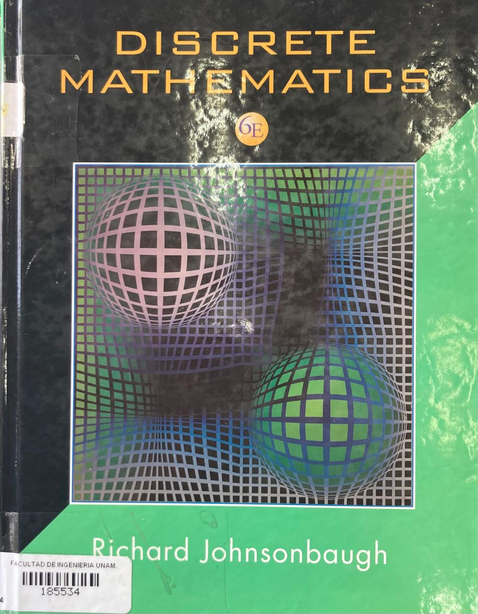
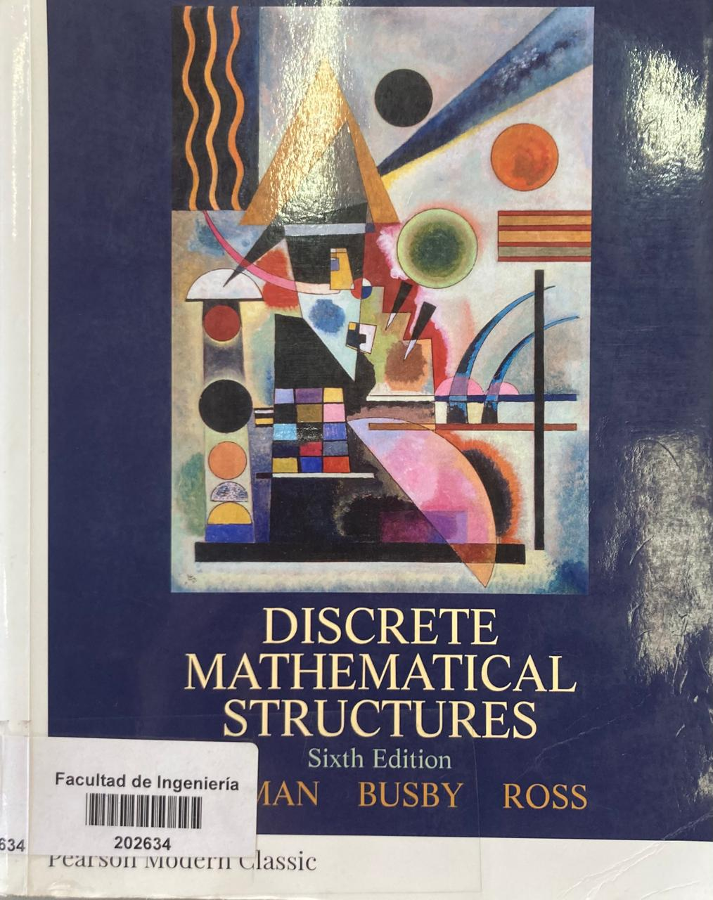
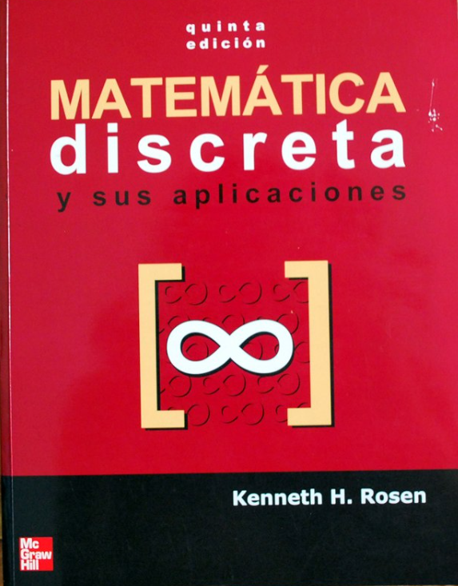
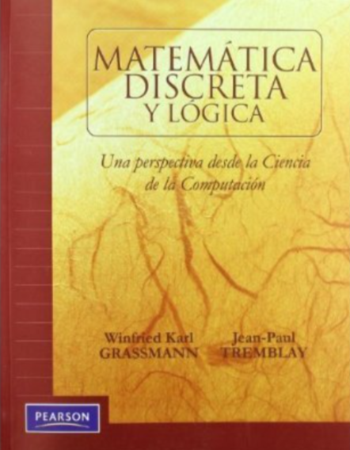
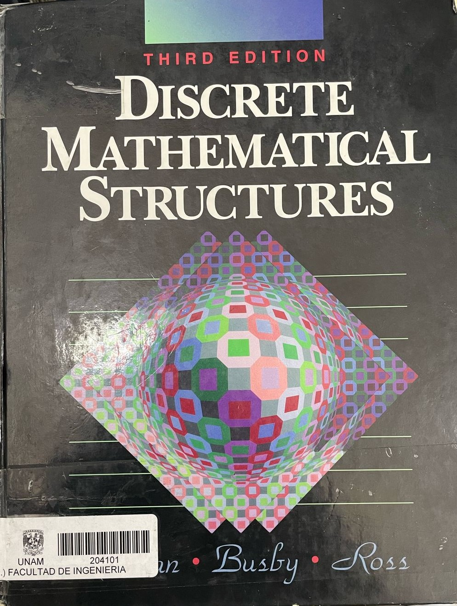

Ubicación: Biblioteca Enrique Rivero Borell, Sección QA39.2-J64
Discrete mathematics - JOHNSONBAUGH, Richard
Ubicación: Biblioteca Enrique Rivero Borell, Sección QA39.2-T44
Discrete Mathematical Structures - KOLMAN, Bernard
Ubicación: Biblioteca Enrique Rivero Borell, Sección QA39.2-R6618
Matemática discreta y sus aplicaciones - ROSEN, Kenneth
Ubicación: Biblioteca Enrique Rivero Borell, Sección QA39.2-T44
Matemáticas discretas con aplicación a la computación - TREMBLAY, Jean-Paul
Ubicación: Biblioteca Antonio Dovalí Jaime, Sección QA79.9-M35M42
Discrete Mathematical Structures - Bernard-Kolman, Robert-C.Busby, Sharon-Ross
Ubicación: Biblioteca Antonio Dovalí Jaime, Sección QA79.9-M35R67
Discrete Mathematics - Kenneth A. Ross, Charles R.B, Charles R.B Wright

Ubicación: Biblioteca Antonio Dovalí Jaime, Sección QA79.9-M35G73
Logic and Discrete Mathematics A Computer Science Perspective - Winfried K., Jean-Paul Tremblay

Ubicación: Biblioteca Antonio Dovalí Jaime, Sección QA79.9-K64
Discrete Mathematical Structures for Computer Science - Bernard Kolman, Robert-C.busby

Ubicación: Biblioteca Antonio Dovalí Jaime, Sección QA79.9-M3S57
Discrete Mathematical Structures - Romualdas Skvarcius, William B.Robinson

Ubicación: Biblioteca Antonio Dovalí Jaime, Sección QA79.9-M35G42
Discrete Mathematical Proofs, Structures, and Applications - Rowan Garnier, John Taylor